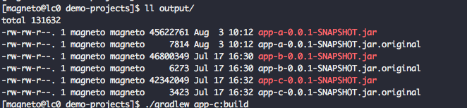
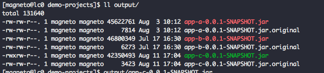
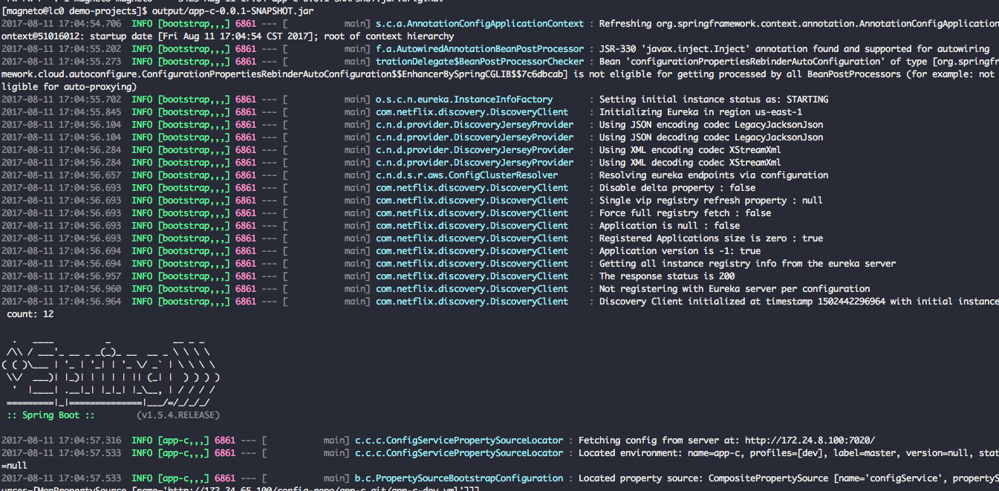
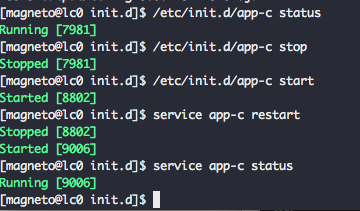

我们现在的线上环境都是简单的使用 nohup java -jar xxx.jar & 的命令来将项目启起来的（感谢 Spring Boot），不过这种方式有诸多不便，比如我们想停掉或者重启某个项目，都需要通过 ps 命令先找到程序对应的 pid，然后再执行 kill 命令，然后再手动启动一遍这个程序。
下边我介绍一种（自我认为）比较科学的方式：
以我们已有的 demo 项目 app-c 为例，在 build.gradle 中加入：
|
|
这样可以编译出来可执行的 jar 包，看下前后对比，下边两张图分别是加之前和加之后 app-c ，可以看到多了 x 权限。
不带 x 权限的 app-c

带 x 权限的 app-c

我们来直接用 output/app-c-0.0.1-SNAPSHOT.jar 运行一下试试：

没有任何问问题。
接下来我们把这个可执行程序通过软链接的方式注册为系统服务：
sudo ln -s /opt/demo-projects/output/app-c-0.0.1-SNAPSHOT.jar /etc/init.d/app-c
这样就可以使用 start、stop、restart 来管理我们的应用了
|
|
并且 status 可以查看运行状态：

用这样的方式来管理线上应用，比之前的方式方便了很多：不需要再进到存放
jar 包的目录来用冗长的代码启动，只需知道应用名称，就可以直接启动、重启、停止我们想管理的应用。